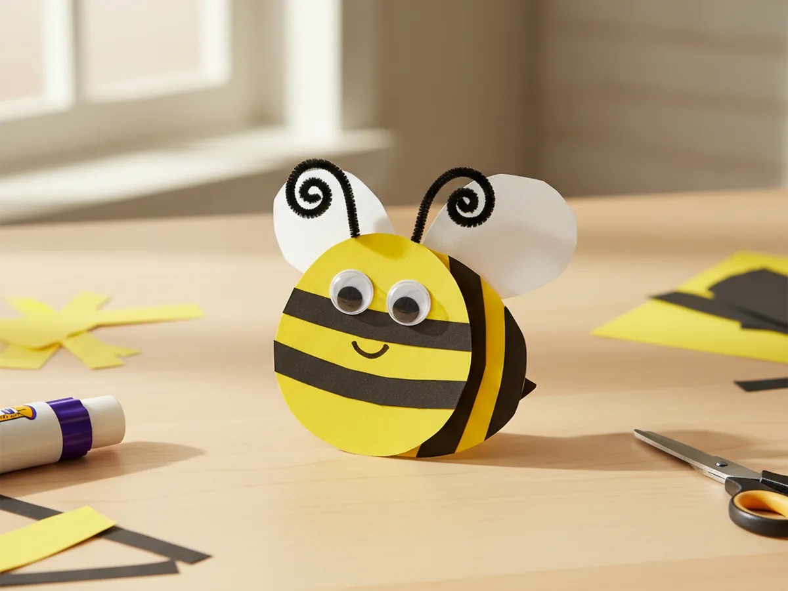
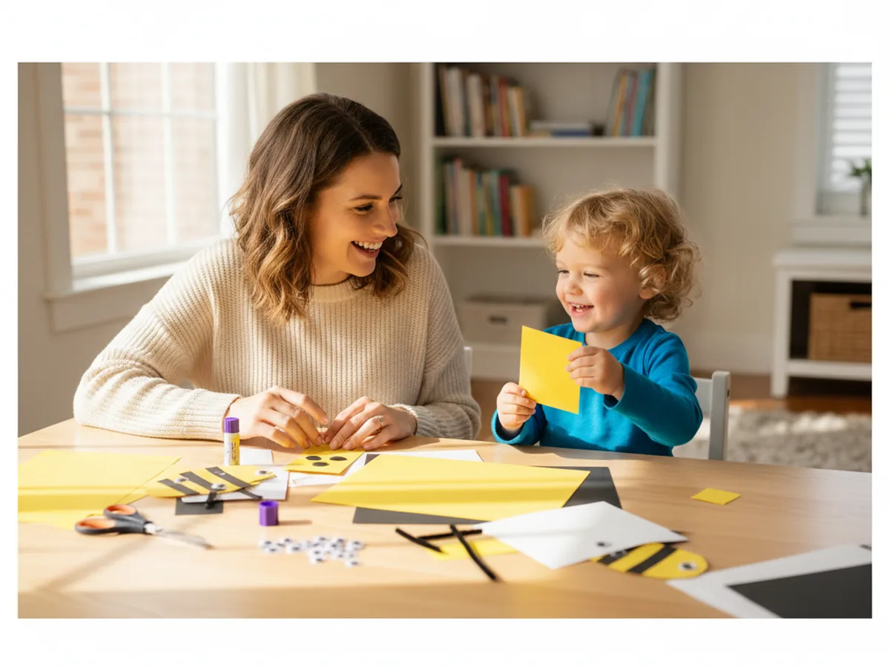
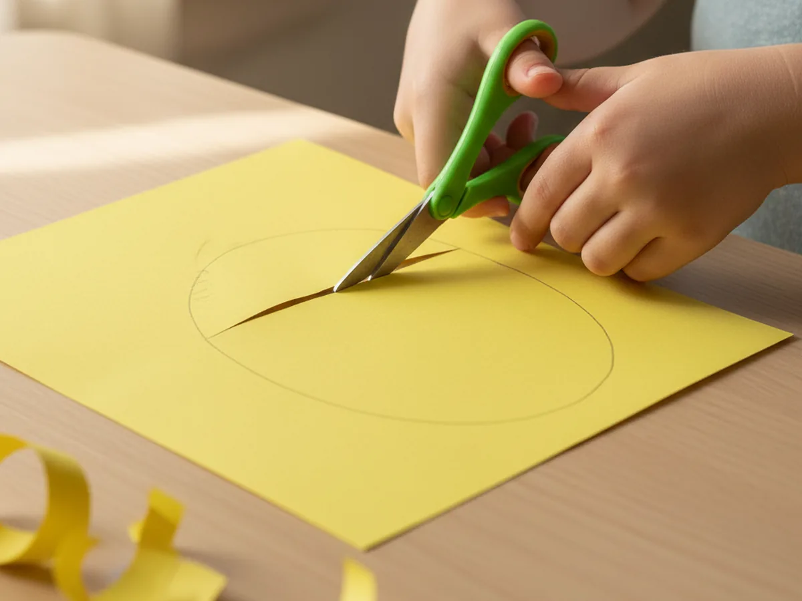
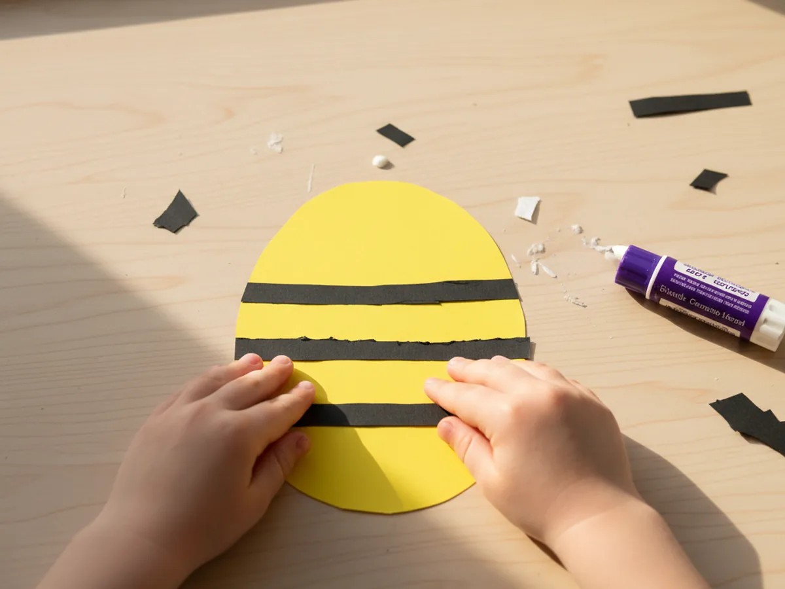
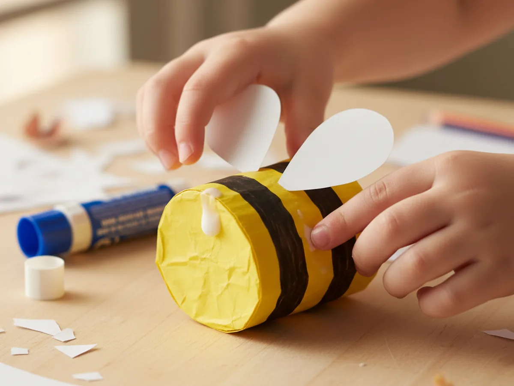
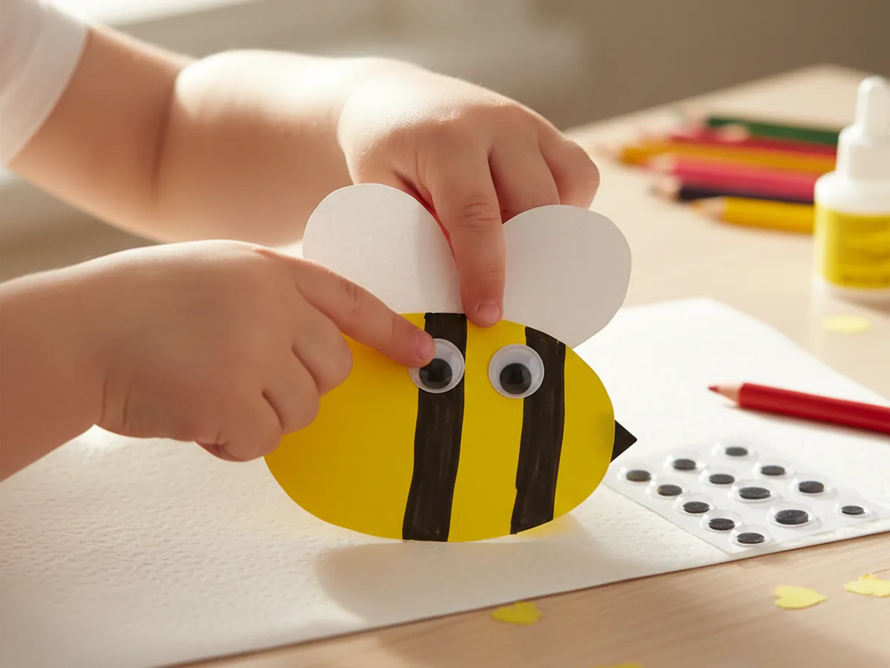
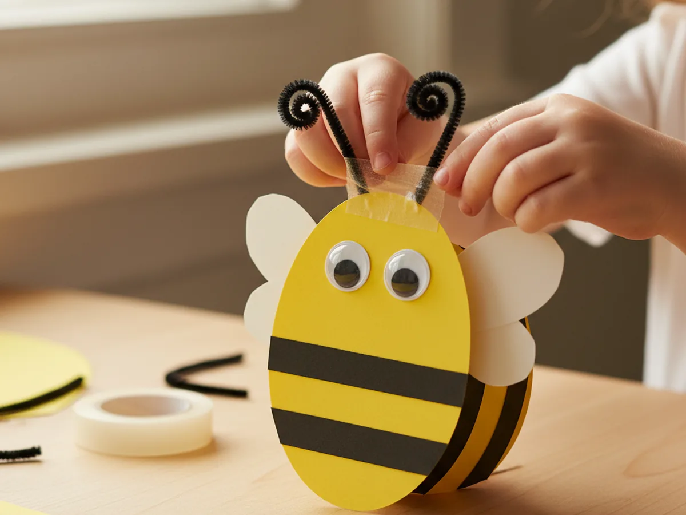
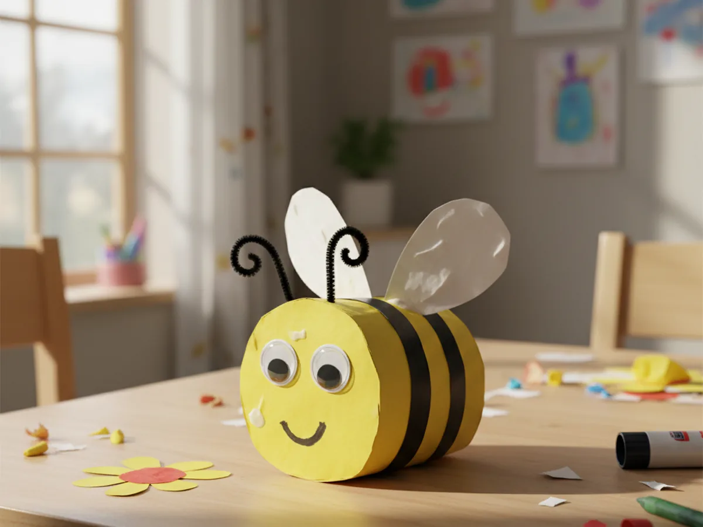

If your little one loves bugs, flowers, or anything that buzzes around the garden, this bee craft paper project is the sweetest way to spend an afternoon together. It uses just a few sheets of construction paper, takes about 25 minutes from start to finish, and ends with the cutest cheerful bee that looks ready to fly off and find some flowers. There is barely any mess, no painting, and so many smiles. 🐝
Even toddlers can help with most of the steps, and bigger kids can really go to town adding their own personality to the bee. Every single one comes out looking a little different, which is exactly what makes this paper bee craft such a sweet shared moment.
Why Kids Love This Craft
Bees are one of those tiny creatures that fascinate young children. They buzz, they wiggle, they zoom from flower to flower, and they live in busy little worlds we cannot quite see up close. When a child gets to make their own bee craft paper, that wonder turns into something they can hold in their hands and show off proudly. There is real pride in saying "look, I made a bee."
This project is also wonderful for little hands. Cutting the body and wings builds fine motor control. Choosing where the stripes go encourages decision-making. And gluing the pieces in place gives kids a sense of order and accomplishment. It looks like simple play, but a lot of quiet learning is happening underneath.
Best of all, this simple bee paper craft gives you a low-stress, screen-free moment together. You can chat about how bees help flowers grow, hum a little buzzing song, or make up a story about where your bee is flying next. Those little side conversations are often the part children remember most.

What You'll Need
Here is everything you will need to make this easy bee craft paper at home. Set everything out on the table beforehand so the activity flows nicely once your child sits down.
- Crayola Construction Paper (240 sheets, assorted colors), you will need yellow, black, and white sheets for this craft.
- Fiskars Training Scissors for Kids, spring-action and blunt-tipped, perfect for ages 3 and up.
- Elmer's School Glue Sticks (30-pack), washable and easy for small hands to grip.
- DECORA Self-Adhesive Googly Eyes (assorted sizes), two per bee, peel and press.
- Black Pipe Cleaners (100 pieces), used to make the cute curly antennae.
- Crayola Washable Broad Line Markers, for drawing the smile and tiny details.
- A pencil, for tracing the body and wing shapes before cutting.
- Clear tape, for attaching the pipe cleaner antennae to the back of the bee.
Step-by-Step Instructions
This paper bee craft step by step is genuinely easy to follow. Take it one little step at a time and let your child do as much as they can on their own.
Step 1: Cut the Bee Body
Take a sheet of bright yellow construction paper and use a pencil to draw a large oval, about the size of a small lemon, in the middle of the page. This will be your bee body. Once the shape is drawn, have your child cut along the line. Wobbly edges are completely fine and actually make the bee look more friendly and handmade.
For toddlers and younger preschoolers, draw the oval for them and let them practice cutting along the curve. If the body comes out a bit lumpy or wonky, do not worry. A slightly imperfect bee always has the most personality.

Step 2: Add the Black Stripes
Now for the part that makes a bee look like a bee. Take a sheet of black construction paper and cut three thin strips, each a little wider than a pencil and a bit longer than the yellow body. Have your child glue the stripes across the middle of the body, leaving small gaps of yellow showing between them. Once the glue is dry, trim off any black ends that hang over the edge of the body so the stripes match the oval shape.
This is the moment when a plain yellow blob suddenly turns into a real little bee, and most kids cannot help grinning when they see it. 🌼

Step 3: Cut and Attach the Wings
Take a sheet of white construction paper and draw two rounded teardrop or oval wing shapes, each about half the size of the bee body. Cut them out together and have your child glue them onto the back of the bee, near the top, so they peek out on each side like little fluttering wings. The wings can stick up slightly or angle outward, and either way looks adorable.

Step 4: Add the Googly Eyes
Peel the backing off two self-adhesive googly eyes and let your child press them firmly onto the front of the bee, near the top of the body above the first stripe. Two medium eyes look the cutest, but two small ones placed close together work just as well. Once the eyes go on, the bee suddenly has a whole personality and feels like a real little friend.
Our last bee somehow ended up looking very surprised, which the kids thought was hilarious.

Step 5: Make the Curly Antennae
Cut two short pieces of black pipe cleaner, each about three inches long. Curl the top of each one around your finger to give it a fun little spiral shape. Flip the bee over so the back is facing up, then tape the straight ends of the pipe cleaners to the top of the head. When you flip the bee back over, two cute curly antennae will pop up above the eyes.
If you do not have pipe cleaners, you can cut two thin strips of black paper instead and curl them around a pencil before gluing them on. Both versions look just as sweet.

Step 6: Draw the Smile and Final Details
Use a black washable marker to draw a tiny curved smile just below the googly eyes. A simple little U-shape is perfect. From there, your child can add anything else they want: rosy cheeks with a pink marker, tiny dots on the wings, or even a flower next to the bee on the table. There is no limit, and every extra detail makes the bee craft paper feel even more theirs. ✨
When the bee is finished, hold it up by one of the wings and gently flutter it through the air while making a soft buzzing sound. Most kids burst into giggles right then, and that is exactly the moment this whole craft is for. 💛

Variations to Try
Bumblebee Garden Scene: Make several bees together and glue them onto a large sheet of light blue construction paper, along with cut paper flowers and a green grass strip along the bottom. Suddenly you have a whole little spring scene your child made themselves, and it deserves a spot on the fridge.
Paper Plate Bee: Swap the yellow oval for a small paper plate painted yellow, then add the black paper stripes, white wings, and googly eyes the same way. The result is a bigger, sturdier bee that hangs beautifully in a window or on a wall.
Hanging Mobile Bee: Punch a small hole at the top of the body and tie a length of yarn through it. Hang one or several bees near a window or above your child's bed. The bees gently sway in any little breeze and feel like they are flying through the room.
Final Thoughts
This bee craft paper tutorial is one of those projects that feels almost too easy for how cute the result is. It uses a handful of simple supplies, takes about 25 minutes from start to finish, and leaves you with something so charming that your little one will want to show it off to anyone who walks through the door. More than that, it gives you both a quiet, joyful moment of making something together. 🌷
If your child makes their own little paper bee, I would love to see it! Pin this article on Pinterest so other craft-loving mamas can find it easily. Happy crafting!
More Crafts You'll Love
If your little one enjoyed this bee craft paper, they will absolutely adore these other sweet garden-friendly paper crafts too: